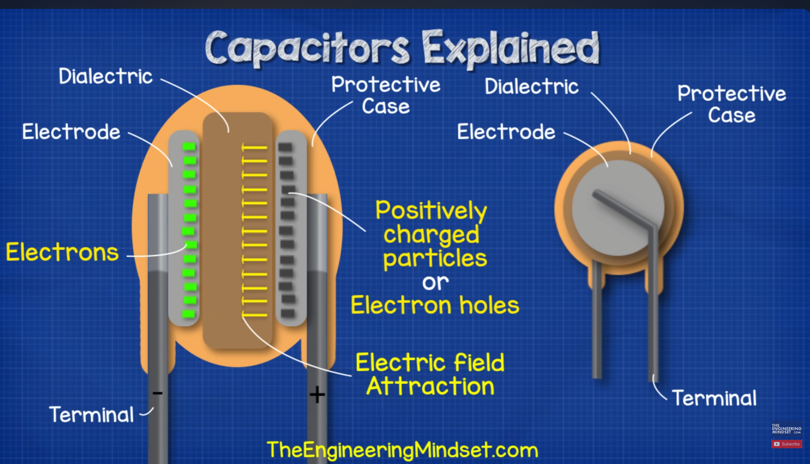

The Electrostatic Field Dynamics
When voltage is applied across a capacitor, electric charges cannot pass through the insulating dielectric layer. Instead, electrons accumulate on one conductive plate, giving it a net negative charge, while electrons are drawn away from the opposing plate, leaving it with a net positive charge.
This separation of charge creates a localized electric field. The field stores potential energy, which releases once the voltage source is disconnected and the capacitor is fully charged. This core physics principle allows capacitors to function as temporary energy banks. But the capacitor has far more applications than just storing, such as smoothing out voltage ripples in power supplies and filtering signals in complex circuits. You can watch the instructional video tutorial on Capacitors Explained and Core Electric Field Basics.
Physical Variables Affecting Capacitance
The ability to store charge (capacitance) is fundamentally governed by three physical variables: the total surface area of the overlapping conductive plates, the distance separating those plates, and the permittivity of the dielectric material chosen. Increasing plate area or using materials with high permittivity significantly increases the stored electrostatic energy.
Structural Component Blueprint

Background image: Capacitor by Paul Evans at youtube.com, CC BY-NC-ND.